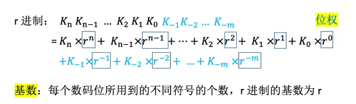

2-8 运算方法和运算器（上）
2.1 数据与文字的表示方法
2.1.1 进位计数制

- 为什么二进制广泛：
①可使用两个稳定状态的物理器件表示；
②0，1正好对应逻辑值假、真，方便实现逻辑运算；
③可很方便地使用逻辑门电路实现算术运算； - 掌握二进制和八进制十六进制的转化：
二进制三位对应八进制中一位，四位对应十六进制一位（注意补位）

- 除基取余法和乘基取整法将十进制转化为任意进制


2.1.2 BCD码 Binary-Coded Decimal
8421码：用四个二进制的表示十进制的一位，在做加法的时候可以+6修正


2.1.3 字符和字符串
ACSII码：


2.1.4 奇偶校验码


2.1.5 海明码


2.1.6 循环冗余校验码


2.2.1 无符号数和原码

- 原码就是在真值的基础上把符号用符号位表示（0表正，1表负），为了满足字长要求，小数在末尾添0，整数符号位和真值最高位中添0。当然计算机的做法是，正就添0，负就加上一个数


- 补码的作用是把减法转换为加法，（其实是把加一个负数改为加另一个负数，就像下面的图片中，加一个负数其实是减去它的绝对值，同时又因为再加上一个”比特数更高的数“能够使所需位数正确，所以这个过程就是取反+1），因此正数没有补码（或者说是其本身），负数的补码：符号位与原码相同，其余数值位由原码取反+1

- 反码：正数的反码是其本身，负数的反码是：符号位不变
补充：
▲浮点数的格式：
在计算机中一个任意进制数N 可以写成
其中M称为浮点数的尾数，是一个纯小数，E 是比例因子的指数，称为浮点数的阶码，是一个整数。比例因子的基数R对于确定了计数制的机器是一个常数，一般规定R 为 2, 8 或 16 ,不需要在浮点数中明确表示出来.

浮点数所表示的范围远比定点数大.假设机器中的数由8位二进制数表示（包括符号位）：在定点机中这8 位全部用来表示有效数字（包括符号）：在浮点机中若阶符阶码占3位，数符尾数占5位,在此情况下，若只考虑正数值，定点机小数表示的数的范围是 0.0000000到 0.1111111 , 相当于十进制数的0到127/128,而浮点机所能表示的数的 范围则是2^(-11) X0.0001到 2^(-11) X0.0001 ,相当于十进制数的1/128到 7.5 . 显然，都用8位，浮点机能表示的数的范围比定点机大得多.
▲移码表示法和实例


▲关于模2运算
可访问链接：https://baike.baidu.com/item/模2运算/18556715?fr=aladdin

本博客所有文章除特别声明外，均采用 CC BY-NC-SA 4.0 许可协议。转载请注明来自 ClancyCC！
评论